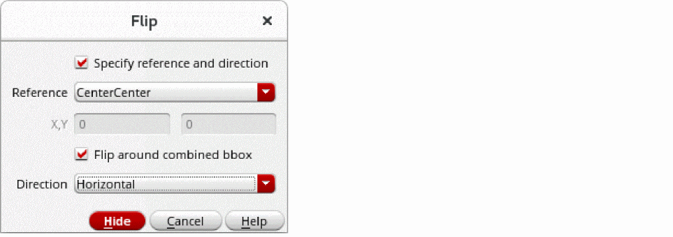

Flipping Objects
You can choose the point of reference and direction for flipping objects. You can also choose to flip multiple selected objects around a specific reference point of the combined bounding box of objects.
To flip objects by using the Flip form:
- Open your design in the layout window and choose Edit – Flip – Flip.
-
Press
F3.
The Flip form is displayed. -
Select the Specify reference and direction check box.
The options in the form are enabled.
 - From the Reference list, select the point of reference around which you want to flip the objects. The default is CenterCenter. You can choose Custom to specify the X and Y coordinates around which you want to flip the objects.
- Ensure the Flip around combined bbox check box is selected if you want to flip multiple selected objects around the specified reference point of the combined bounding box of the objects.
- Set the flip direction to horizontal or vertical in the Direction list.
-
Select the objects on the canvas that you want to flip.
The objects are flipped according to the settings you specified in the form.
Related Topics
Return to top